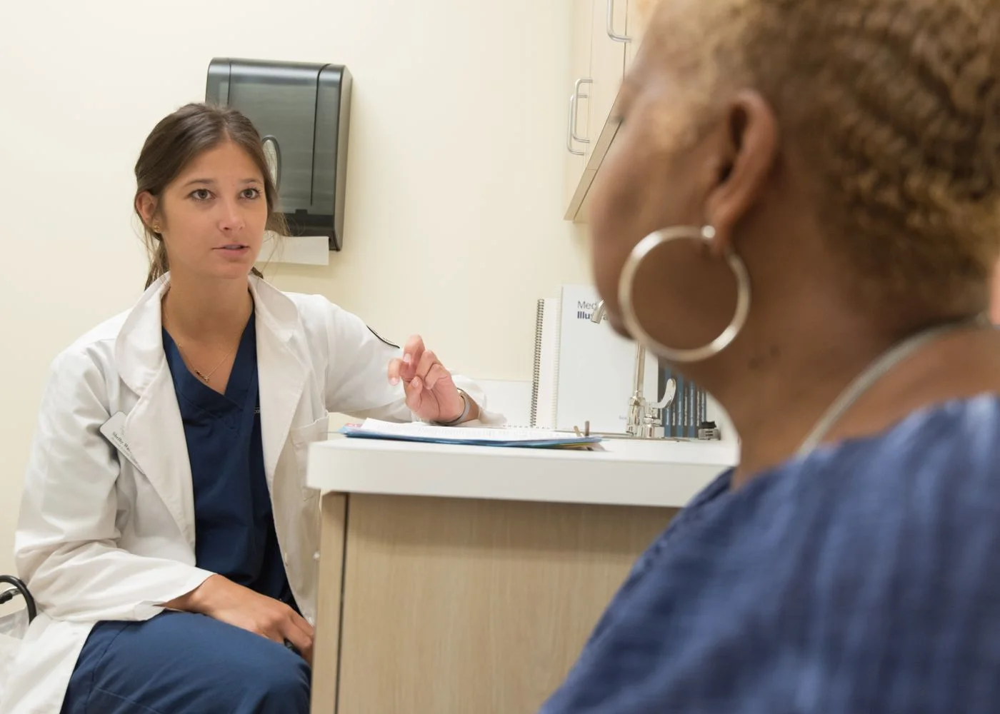
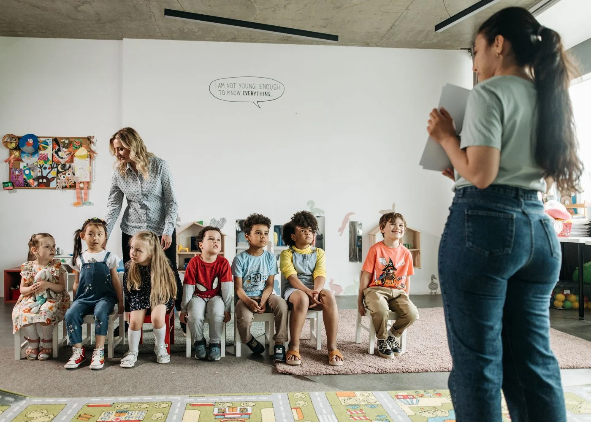

DEPORTES / PASIÓN QUE SE COMPARTE
Crea la página
de tu equipo.
Inspira futuras estrellas.
Que el primer paso de una gran historia empiece al descubrir tu escuela, tu equipo o tu academia.
DISEÑO WEB CON IDENTIDAD
Hay negocios que se encuentran.
Y otros que se quedan contigo.
Diseñemos el tuyo.
01 / EL PUNTO DE PARTIDA
Diseñamos desde lo que te hace diferente.Escuchamos qué quieres transmitir y lo convertimos en una página que se ve, se recorre y se recuerda como tu marca.
Encuentra tu sector02 / EXPLORA LAS POSIBILIDADES
Una mirada a lo que podríamos crear juntos.
Conceptos ilustrativos para imaginar tu proyecto.
DEPORTES / PASIÓN QUE SE COMPARTE
Que el primer paso de una gran historia empiece al descubrir tu escuela, tu equipo o tu academia.

CLÍNICAS / CONFIANZA
Haz que tus pacientes conozcan el cuidado que encontrarán contigo.

CENTROS EDUCATIVOS / POSIBILIDADES
Una comunidad que las familias puedan sentir desde su primera visita.
TU ESENCIA CAMBIA EL DISEÑO
Elegancia. Cariño. Identidad. Movimiento.
Cada sector tiene su propio lenguaje.
JOYERÍAS
Una vitrina para piezas que significan algo.
VETERINARIAS
Cercanía y cuidado desde el primer clic.
ROPA
Colecciones que expresan quién eres.
CALZADO
Diseño que invita a encontrar tu próximo par.
Estas escenas muestran posibilidades de diseño. Cada proyecto se crea con la identidad, el contenido y las necesidades de su marca.
03 / DE LA IDEA A LA EXPERIENCIA
El diseño, las palabras y el movimiento deben contar la misma historia: la tuya.
Colores, composición y personalidad que nacen de tu marca y de las personas con las que quieres conectar.
Mensajes claros, fotografía y video elegidos para transmitir confianza, emoción o pertenencia según tu proyecto.
Una página cómoda de explorar desde el teléfono o la computadora, con movimiento que acompaña y botones fáciles de encontrar.
Organizamos servicios, colecciones o información para que tus visitantes sepan cómo consultar, conocerte o iniciar una conversación.
04 / LO CONSTRUIMOS CONTIGO
Pocas etapas. Una idea compartida.
Una web que tenga sentido para ti.
Qué haces, a quién quieres llegar y qué te gustaría que sintieran al descubrirte.
Unimos diseño, contenido y movimiento en una propuesta que puedas recorrer.
Revisamos juntos los detalles y preparamos una experiencia que represente tu marca.
05 / LA PRÓXIMA HISTORIA PUEDE SER LA TUYA
Tu clínica. Tu colegio. Tu marca.
Tu equipo. Tu manera de conectar.
Pronto podrás contactarnos por estos canales.